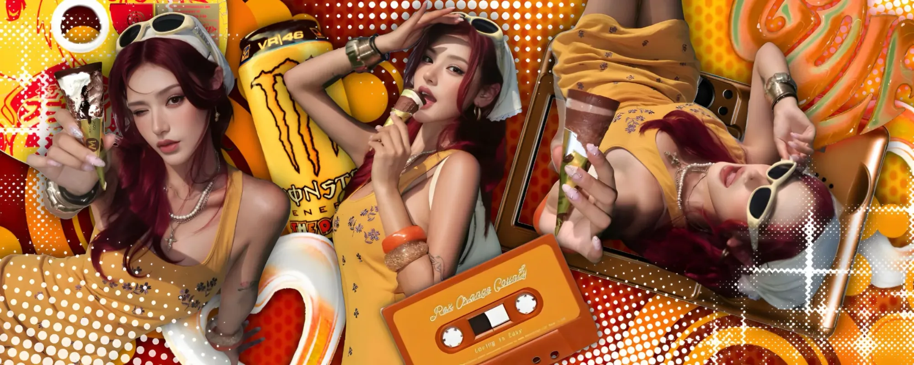
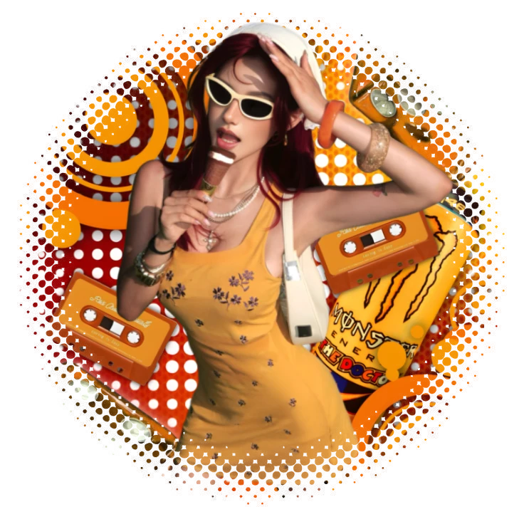
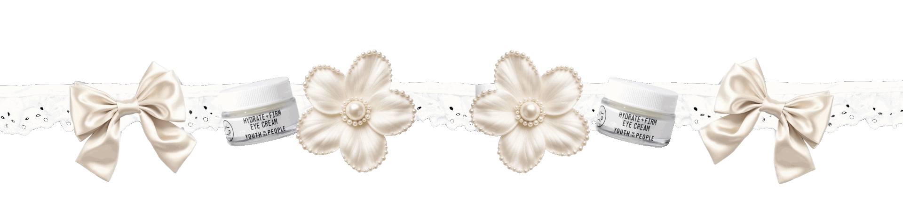
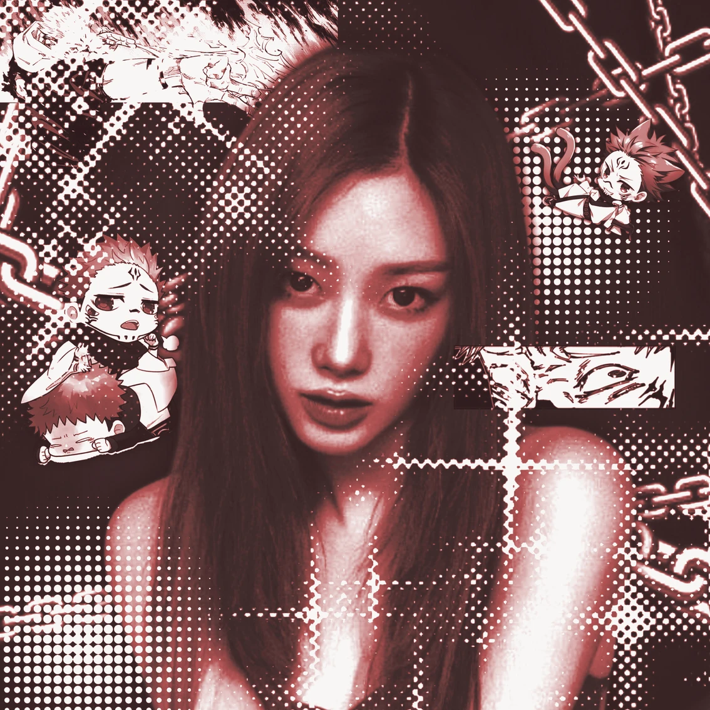
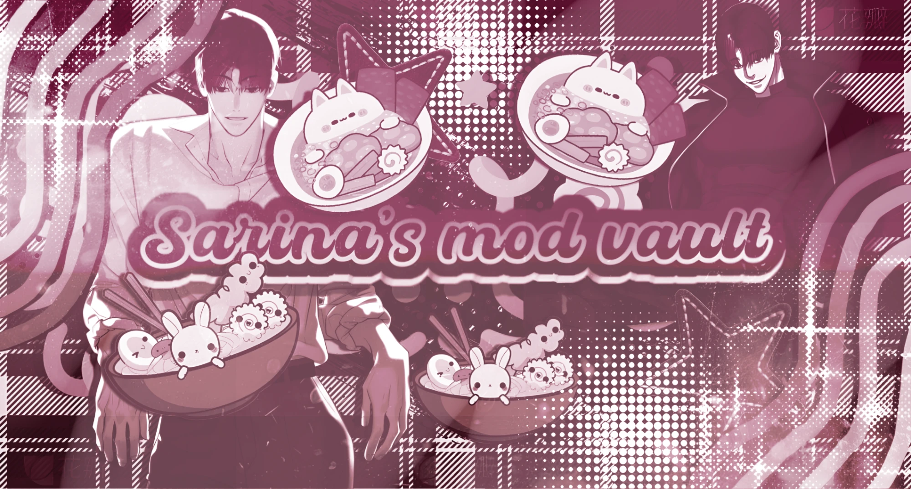
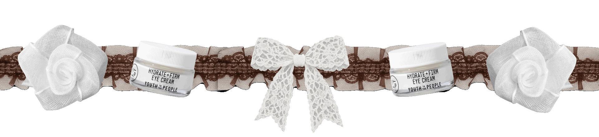
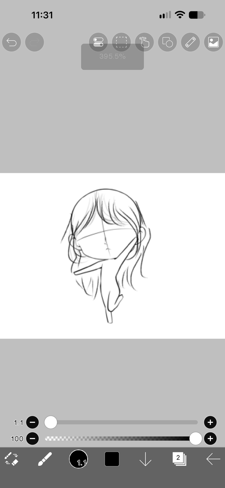

Oranje zomer
Een banner en profielfoto in warme kleuren. Ik combineerde foto's met een blikje, een cassettebandje en veel stippen. Zo lijkt het op een retro poster.
- ibisPaint
- Picsart


Hoi! Welkom op mijn website
Ik ben Beam Chaipotha. Op Discord heet ik Sarina. Tekenen en foto's bewerken is mijn hobby. In mijn vrije tijd maak ik banners, profielfoto's en GIF's.
Bekijk mijn projecten
Ik vind het leuk om iets moois te maken van foto's, tekeningen en patronen. Ik begin met een idee en een paar kleuren. Daarna voeg ik stap voor stap meer toe.
Op deze website zie je wat ik heb gemaakt en wat ik kan. Alle projecten heb ik in mijn vrije tijd gemaakt.
Hier zie je mijn werk, verdeeld in vier groepen. Klik op een afbeelding om deze groot te bekijken.
Deze sets maakte ik voor een heel profiel. De kleine afbeelding laat zien hoe het eruitziet als alles samenkomt.
Een banner en profielfoto in warme kleuren. Ik combineerde foto's met een blikje, een cassettebandje en veel stippen. Zo lijkt het op een retro poster.
Een rustige set met het thema zee. De foto in het midden staat in een rand die lijkt op een postzegel. De zeesterren en bubbels maken het af.
Zelf getekend
Een koude, zachte set. De anime-figuren heb ik zelf getekend. Ik gebruikte vooral wit en lichtblauw. De stippen onderaan zorgen voor diepte.
Een banner is de brede afbeelding bovenaan een profiel. Elke banner heeft een eigen thema en eigen kleuren.
Een profielfoto is klein, dus alles moet meteen duidelijk zijn. Daarom gebruik ik één sterk beeld en duidelijke kleuren.

Donkerrood met veel contrast. De kettingen en stippen geven een stoere stijl.
De profielfoto bij de set Oranje zomer. De rand van stippen loopt langzaam weg.

Een titelbeeld met eigen tekst. Alles staat in één kleur, zodat de tekst goed opvalt.
Dit zijn smalle stroken met een doorzichtige achtergrond. Je kunt ze gebruiken als rand op een profiel of als scheiding tussen stukken tekst.

Een GIF met twee beelden die elkaar afwisselen. De strik en de rozen vallen goed op tegen het bruine kant.
Dezelfde opbouw, maar dan helemaal in wit en crème. Je ziet deze GIF ook bovenaan deze website.
Twee stoere stroken in zwart en wit. De figuur staat in het midden en de spetters lopen door naar de zijkanten.
Toen ik uploader was, vroeg iemand of ik iets voor diegene wilde tekenen.
Hier zie je mijn schets. Ik begin met een paar lijnen in ibisPaint en werk de tekening daarna verder uit.

Ik gebruik drie programma's. Elk programma heeft een eigen taak.
ibisPaint
ibisPaint is een app om mee te tekenen. Ik werk met lagen, zodat ik elk onderdeel apart kan aanpassen.
Picsart
Met Picsart bewerk ik foto's. Ik knip ze uit, pas de kleuren aan en voeg stickers en effecten toe.
Ezgif
Ezgif is een website voor GIF's. Ik zet er meerdere beelden mee achter elkaar, zodat de afbeelding beweegt.
1 jaar
/novas
DTI Supernovas is een groep op Discord. Daar heet ik Sarina. Ik ben daar één jaar uploader geweest. Ik had ook nog twee andere rollen, met meer verantwoordelijkheid.
Bij deze groep leerde ik hoe het is om samen te werken, om regelmatig iets af te maken en om verantwoordelijkheid te nemen.